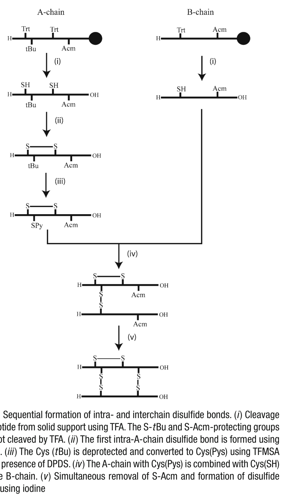

Chapter 5 合成多肽中多个二硫键的区域选择性顺序形成
原文标题：Sequential Formation of Regioselective Disulfide Bonds in Synthetic Peptides with Multiple Disulfide Bonds
作者：Fazel Shabanpoor, Mohammed Akhter Hossain, Feng Lin, John D. Wade
出处：Methods in Molecular Biology, vol. 1047 (2013), pp. 81–87
DOI: 10.1007/978-1-62703-544-6_5
目前已开发了多种用于在重组DNA来源和化学合成的多肽与蛋白质中形成二硫键 (disulfide bond) 的方法，但只有少数得到了广泛接受。对于合成多肽和蛋白质中二硫键形成方法的选择，需要针对每种 individual polypeptide（个别多肽）进行量身定制，使得反应条件具有选择性 (selective)、高效性 (efficient) 和安全性 (safe)，并能获得最大产率。
本章描述了三种二硫键的区域选择性 (regioselective) 顺序形成方法，该方法已针对 insulin–relaxin superfamily（胰岛素-松弛素超家族）的双链 heterodimeric polypeptide（异源二聚体多肽）成员的合成进行了优化。
关键词：Disulfide bond（二硫键）、Regioselective（区域选择性）、Orthogonal S-protecting groups（正交巯基保护基）、Relaxin（松弛素）、Insulin（胰岛素）
📌 要点总结：本章核心是介绍一种利用三种不同半胱氨酸侧链保护基团，通过正交策略顺序形成三个二硫键（一个链内 + 两个链间）的方法，专门针对胰岛素-松弛素超家族双链多肽的合成。
二硫桥 (disulfide bridge) 是在两个 cysteine（半胱氨酸）的 thiol side chain（巯基侧链）之间形成的，存在于许多生物活性多肽和蛋白质中。它们主要在真核细胞 (eukaryotic cells) 的内质网 (endoplasmic reticulum) 中形成 [1]，先于多肽或蛋白质分泌到胞外区室。
许多多肽和蛋白质天然依赖二硫键来实现正确的构象折叠 (conformational folding)、稳定性 (stability) 以及随后的生物活性 (biological activities)。二硫键也被有意引入多肽中作为人工结构基序 (artificial structural motif)，以限制并减少其构象自由度 [2]。
在过去的二十年中，二硫键形成的合成方法学开发受到了首要关注，并取得了显著进展 [3]。这主要是因为通过基因组序列鉴定了大量含有二硫键桥的多肽激素和天然产物。为了研究这些含二硫键多肽和蛋白质的生物学功能以及其 de novo（从头）设计的类似物，它们通常需要被化学合成。
其合成通常是一项具有挑战性的任务，特别是对于含有多个二硫键的多肽。解决这个问题的一种方法是利用各种已开发的 thiol-protecting groups（巯基保护基），它允许以正交 (orthogonal) 方式形成多个区域选择性二硫键 [4–9]。
我们拥有一种高度优化的方案，用于 insulin–relaxin superfamily（胰岛素-松弛素超家族）双链多肽成员中二硫键的逐步区域选择性形成（Fig. 1）。该方案使用三种不同的半胱氨酸侧链保护基团，利用 Fmoc/tBu 策略形成一个链内 (intrachain) 和两个链间 (interchain) 二硫键，具有区域选择性。我们在实验室已经常规使用该方法超过十年。它非常有效，最终产物可以获得良好的总体产率。它可以方便地应用于胰岛素-松弛素超家族十种多肽激素中任何一种的制备。此外，三个步骤中的两个步骤可以方便地、成功地应用于含有一个或两个二硫键的单链多肽。
📌 要点总结：① 二硫键在真核细胞内质网中形成，对多肽/蛋白质的正确折叠和生物活性至关重要；② 含多个二硫键的多肽合成具有挑战性；③ 本章方法使用三种正交保护基（S-Trt、S-tBu、S-Acm）实现三个二硫键的逐步区域选择性形成；④ 方法已成功应用于胰岛素-松弛素超家族十余年。
所有溶液需使用去离子水 (deionized water) 配制。Trifluoromethanesulfonic acid (TFMSA)、thioanisole（硫代茴香醚）及其他试剂必须是分析纯和色谱纯级别。
1. 100 mM NH₄HCO₃ buffer, pH 8：称取 7.905 g NH₄HCO₃ 加入 900 mL 水中，搅拌至完全溶解，用 1 M NaOH 调节 pH。定容至 1 L，室温保存。
2. 1 mM 2,2′-Dipyridyl disulfide (DPDS) 溶液：将 88.1 mg DPDS 加入 100 mL 甲醇中，搅拌至溶解。室温保存（见 Note 1）。
3. 6 M Guanidine hydrochloride (GnHCl) / 0.1 M Gly-NaOH, pH 8.5：称取 286.6 g GnHCl 和 3.75 g glycine，加入 500 mL 水，搅拌溶解后用 NaOH 调节 pH。室温保存。
4. 6 M Guanidine hydrochloride (GnHCl), pH < 7：称取 286.6 g GnHCl，溶于 500 mL 水中。室温保存。
5. 60 mM HCl：将 0.5 mL 的 12 M HCl 加入 9.5 mL 水中。室温保存。
6. 20 mM Iodine (I₂) 溶液：称取 253.8 mg I₂，在 100 mL acetic acid（冰醋酸）中搅拌至完全溶解（见 Note 2）。室温保存。
7. 20 mM Ascorbic acid（抗坏血酸）：将 176.1 mg 抗坏血酸溶于 50 mL 水中（见 Note 3）。
8. RP-HPLC 缓冲液：0.1% trifluoroacetic acid (TFA) 的水溶液 (A) 和乙腈溶液 (B)。向 1 L 水中加入 1 mL TFA 即得缓冲液 A；同理向 1 L acetonitrile 中加入 1 mL TFA 得缓冲液 B（见 Note 4）。两种溶剂均需通过超声脱气 (sonication) 或氦气吹扫 (helium sparging) 除气。
📌 要点总结：关键试剂包括：DPDS（用于第一步骤二硫键氧化）、TFMSA（强酸，用于tBu脱保护并转化为Pys活化基）、I₂/冰醋酸（用于Acm脱保护同时氧化形成二硫键）、抗坏血酸（用于淬灭过量碘）。缓冲体系为NH₄HCO₃ (pH 8) 和 GnHCl (变性条件)。

Fig. 1 链内和链间二硫键的顺序形成。(i) 使用 TFA 从固相载体上切下多肽。S-tBu 和 S-Acm 保护基不被 TFA 切除。(ii) 使用 DPDS 形成第一个 A 链内二硫键。(iii) 使用 TFMSA 在 DPDS 存在条件下将 Cys(tBu) 脱保护并转化为 Cys(Pys)。(iv) 带有 Cys(Pys) 的 A 链与 B 链上的 Cys(SH) 结合。(v) 使用碘同时脱除 S-Acm 并形成二硫键。
胰岛素-松弛素超家族所有多肽的 A 链包含四个半胱氨酸。其中参与形成 A 链内二硫键的两个半胱氨酸使用 S-trityl (S-Trt) 保护基进行保护。该保护基在 peptide–resin cleavage/deprotection（多肽-树脂切割/脱保护）步骤中被去除（Fig. 1(i)）。半胱氨酸编号基于 human relaxin-3 的一级结构。
1. 粗品切割后的 [Cys¹⁰,¹⁵(S-thiol), Cys¹¹(tBu), Cys²⁴(Acm)] A 链可溶解于以下任一溶液中，浓度为 1 mg/3 mL（见 Note 5）：
(a) 0.1 M NH₄HCO₃ buffer, pH 8。
(b) 6 M GnHCl, pH 6。
(c) 20–50% acetonitrile in water（水中的乙腈）。
2. 在搅拌条件下，按每 1 mg 多肽加入 0.2 mL DPDS 溶液的比例，将 DPDS 溶液加入多肽溶液中（Fig. 1(ii)）。
3. 在 DPDS 存在下，free thiols（游离巯基）的氧化通常非常迅速。反应通常在 5–10 分钟内完成。
4. 取一部分反应混合物酸化（见 Note 6）（通过加入 buffer A），然后用 RP-HPLC 分析。多肽的氧化形式通常比还原形式在反相柱上更早洗脱出来。
【说明】此步骤利用 DPDS（2,2′-二吡啶基二硫化物）作为氧化剂，选择性地将 A 链上两个游离的半胱氨酸巯基（Cys¹⁰ 和 Cys¹⁵，原先被 S-Trt 保护，在 TFA 切割时脱保护）氧化形成链内二硫键。由于 Cys¹¹ 的 S-tBu 和 Cys²⁴ 的 S-Acm 在 TFA 中稳定，因此不会参与此步骤的反应，实现了区域选择性。
📌 要点总结：① A链内二硫键通过DPDS选择性氧化两个游离-SH（原S-Trt保护）形成；② 反应在5-10分钟内完成；③ 氧化产物比还原形式在RP-HPLC上更早出峰；④ 关键在于S-tBu和S-Acm在TFA中稳定，不会参与此步反应。
为了形成 A 链和 B 链之间的第一个链间二硫键，A 链第 11 位 cysteine 的 S-tert-butyl (S-tBu) 保护基被转化为 2-pyridylsulfenyl 衍生物 (S-Pyr)（Fig. 1(iii)）：
步骤 1：将 A 链和 DPDS（见 Note 7）（1:4 μmol）溶解于 TFA 和 thioanisole（9:1 v/v）中（50 μg/μL）（见 Note 8）。将反应混合物在冰上冷却至约 4–0°C。
步骤 2：向上述混合物中加入等体积的 TFMSA in TFA（1:4 v/v），搅拌反应 30 分钟（见 Note 9）。
【化学反应机理】TFMSA（三氟甲磺酸）是一种超强酸，在此条件下选择性切除 S-tBu 保护基，释放出游离巯基。在 DPDS 存在时，游离巯基立即被转化为 S-Pyr（2-吡啶基磺烯基）活化中间体。S-Pyr 是一种优良离去基团，后续与 B 链的游离巯基发生置换反应即可形成链间二硫键。
步骤 3：将整个反应混合物加入含有 20–30 mL 预冷 diethyl ether（乙醚）的 50 mL 管中。离心沉淀多肽，用冷乙醚洗涤沉淀 4–5 次以去除过量 DPDS（见 Note 10）。
步骤 4：将纯化后的 [Cys(S-Pyr)¹¹] A 链溶解于 NH₄HCO₃, pH 8 中 [10, 11]。对于难溶多肽，可使用 6 M GnHCl, pH 8.5 或 6 M GnHCl/0.1 M Gly-NaOH buffer, pH 8.5 溶解 [5]（见 Note 11）。将等摩尔量的带有 Cys(SH)¹⁰ 的 B 链溶解于水或 6 M GnHCl, pH 6 中（见 Note 12）。将 B 链溶液逐滴加入搅拌中的 A 链溶液（Fig. 1(iv)）。反应进度可通过 RP-HPLC 监测（见 Note 13）。
【链结合反应机理】A 链上的 S-Pyr 活化基与 B 链 N 端 cysteine 的游离巯基 (-SH) 发生亲核置换反应。巯基攻击 S-Pyr 中的硫原子，释放出 2-硫吡啶酮 (2-thiopyridone)，同时形成 A-B 链间的二硫键。该反应在中性至弱碱性 pH 下快速进行。
📌 要点总结：① S-tBu保护基通过TFMSA/DPDS在TFA-thioanisole中0°C处理30 min被转化为S-Pyr活化基；② 产物用冷乙醚沉淀纯化；③ A链Cys(S-Pyr)¹¹与B链Cys(SH)¹⁰在中性/弱碱性pH下发生亲核置换形成第一个链间二硫键；④ 释放2-硫吡啶酮作为副产物；⑤ 反应通常15-20分钟完成。
第二个链间二硫键通过使用 iodine（碘）同时脱除 S-acetamidomethyl (S-Acm) 保护基并氧化 A 链和 B 链上的半胱氨酸来形成（Fig. 1(i)）[5, 10, 12, 13]：
步骤 1：将各含一个 S-Acm 基团的结合态 A 链和 B 链多肽溶解于 glacial acetic acid（冰醋酸）中（1.5–2 mg/mL）（见 Note 14）。
步骤 2：加入 60 mM HCl（不超过总体积的 5%）。
步骤 3：在搅拌条件下，立即将 iodine 溶液（20 mM 冰醋酸溶液，20–25 eq/Acm）逐滴加入多肽溶液中。使反应在室温下进行 45–60 分钟。由于碘溶液对光敏感，反应须在暗色玻璃瓶中进行。
【化学反应机理】碘在冰醋酸介质中氧化性脱除 S-Acm 保护基。反应机理涉及碘对硫原子的亲电攻击，形成硫鎓离子中间体，随后消除乙酰胺 (acetamide, CH₃CONH₂)，产生的游离巯基立即被过量碘氧化为二硫键。该反应是一步完成的——Acm 脱保护和二硫键形成同步发生。
步骤 4：为监测反应进度，取一部分混合物，加入等体积的 20 mM ascorbic acid（抗坏血酸）以淬灭 (quench) 碘。稀释混合物后用 RP-HPLC 和 mass spectrometry（质谱）分析。
步骤 5：起始 S-Acm 含有多肽的消失（见 Note 15）表明二硫键形成完成。将整个反应混合物倒入含有预冷乙醚的 50 mL 管中，在冰上放置 3 分钟。通过离心收集沉淀的多肽 [14]。小心倾倒去除乙醚，蒸发残留乙醚。将所得固体溶解于适当溶剂中，加入 20 mM ascorbic acid 以淬灭残余碘（见 Note 16）。
📌 要点总结：① 第二个链间二硫键通过I₂/冰醋酸同时脱除S-Acm并氧化形成；② 碘用量为20-25 eq/Acm；③ 反应在暗瓶中室温进行45-60 min；④ 用抗坏血酸淬灭过量碘；⑤ 产物用冷乙醚沉淀纯化；⑥ 注意：含Trp/His/Tyr的多肽不能用甲醇（会导致碘化副反应）。
Note 1：该溶液可在架上放置数月。
Note 2：碘溶液可在室温下于暗色容器中保存数周，但最好新鲜配制。
Note 3：抗坏血酸溶液需每次新鲜配制，因其会随时间降解。
Note 4：此操作须在通风橱 (fume hood) 中进行，佩戴护目镜和手套，使用玻璃移液管。
Note 5：多肽溶液应当稀释以防止 A 链二聚体化。某些多肽在较高 pH 下不溶。在这种情况下，反应也可在较低 pH 下进行，且在 DPDS 存在时仍然非常迅速 [15]。
Note 6：由于多肽溶液的 pH 约为 8，而大多数硅胶基 RP-HPLC 柱不耐高 pH，最好在上 HPLC 前降低溶液 pH。这在需要纯化大量体积的多肽溶液时尤为重要。
Note 7：应避免过量使用（如超过 5 当量）DPDS，因为它可能在 RP-HPLC 纯化时与多肽共洗脱。
Note 8：最好在形成 A 链内二硫键后纯化 A 链，特别是在使用了高浓度盐缓冲液的情况下。
Note 9：TFMSA 是极强的酸。反应必须在通风橱中进行，穿着适当的防护服和护目设备。
Note 10：在最初几次洗涤中，乙醚的深黄色表明存在 DPDS。随着多肽被洗涤多次，黄色褪去，表明 DPDS 量减少。残余的 DPDS 可在 HPLC 纯化中去除。
Note 11：某些多肽不溶于 pH 8 的 NH₄HCO₃ 缓冲液。在这些情况下，我们使用了 pH 8.5 的 6 M GnHCl 或 6 M GnHCl/0.1 M Gly-NaOH buffer, pH 8.5 来溶解多肽。应避免过量使用 Gly，因为其去除在 RP-HPLC 纯化期间可能变得困难。它可能与目标产物共洗脱。
Note 12：不要将带有游离 thiol 的 B 链溶解在高 pH 缓冲液中，因为这会导致 B 链二聚体化。在链结合期间应避免使用高疏水性溶剂如 acetonitrile。我们发现加入过量 acetonitrile 会导致 A-B 链结合反应缓慢。
Note 13：A 链通常比 B 链早 3–4 分钟洗脱，结合产物在两个峰之间洗脱。链结合反应非常迅速，通常在 15–20 分钟内完成。
Note 14：不建议在胰岛素-松弛素族多肽中使用甲醇 (methanol)，因为它们都含有 Trp、His 或 Tyr。使用 MeOH 可能导致这些敏感残基的碘化 (iodination)。
Note 15：反应时间需要针对每种 individual peptide 进行优化。我们发现反应通常在 30–60 分钟内完成。
Note 16：一旦多肽被溶解，溶液由于残留碘的存在呈淡黄色。逐滴加入抗坏血酸直至溶液变澄清。
📌 要点总结：关键注意事项：① 多肽溶液需稀释以防止二聚体化；② B链游离巯基不能在高pH溶解（防二聚）；③ 链结合时避免过量乙腈（会减慢反应）；④ 含Trp/His/Tyr的多肽禁用甲醇（防碘化）；⑤ TFMSA操作需严格防护。
本章描述的三步正交二硫键形成策略可概括如下表：
| 步骤 | 保护基 | 脱保护/氧化条件 | 形成的二硫键 |
|---|---|---|---|
| Step 1 (3.1) | S-Trt → 游离SH | TFA切割 + DPDS氧化 | A链内 (Cys¹⁰–Cys¹⁵) |
| Step 2 (3.2) | S-tBu → S-Pyr | TFMSA/TFA转化 + B链Cys(SH)亲核置换 | A-B链间 (Cys¹¹–B链Cys) |
| Step 3 (3.3) | S-Acm → 游离SH | I₂/冰醋酸氧化脱保护 | A-B链间 (Cys²⁴–B链Cys) |
| 最终产物 | 无（全部脱除） | — | 3个二硫键（1链内 + 2链间） |
该策略的核心设计理念是利用三种保护基对酸和氧化剂的不同稳定性来实现正交脱保护：
• S-Trt（三苯甲基）：对 TFA 不稳定 → TFA 切割时自动脱除 → 暴露游离-SH
• S-tBu（叔丁基）：对 TFA 稳定，但可被 TFMSA 脱保护 → 转化为活化基 S-Pyr
• S-Acm（乙酰氨基甲基）：对 TFA 和 TFMSA 均稳定 → 仅被 I₂ 氧化脱除
这种逐层脱保护策略确保了每个二硫键在形成时不会干扰其他已形成的或待形成的二硫键，从而实现了完全的区域选择性 (regioselectivity)。
1. Sevier CS, Kaiser CA (2002) Formation and transfer of disulphide bonds in living cells. Nat Rev Mol Cell Biol 3:836–847
2. Li P, Roller PP (2002) Cyclization strategies in peptide derived drug design. Curr Top Med Chem 2:325–341
3. Witt D (2008) Recent developments in disulfide bond formation. Synthesis 16:2491–2509
4. Boulègue C, Musiol H-J, Prasad V, Moroder L (2006) Synthesis of cystine-rich peptides. Chim Oggi 24:24–36
5. Bathgate RA, Lin F, Hanson NF, et al. (2006) Relaxin-3: improved synthesis strategy and demonstration of its high-affinity interaction with the relaxin receptor LGR7 both in vitro and in vivo. Biochemistry 45:1043–1053
6. Bathgate RA, Samuel CS, Burazin TC, et al. (2002) Human relaxin gene 3 (H3) and the equivalent mouse relaxin (M3) gene. Novel members of the relaxin peptide family. J Biol Chem 277:1148–1157
7. Bullesbach EE, Schwabe C (1991) Total synthesis of human relaxin and human relaxin derivatives by solid-phase peptide synthesis and site-directed chain combination. J Biol Chem 266:10754–10761
8. Lin F, Otvos L Jr, Kumagai J, et al. (2004) Synthetic human insulin 4 does not activate the G-protein-coupled receptors LGR7 or LGR8. J Pept Sci 10:257–264
9. Sieber P, Kamber B, Hartmann A, et al. (1977) Total synthesis of human insulin. IV. Description of the final steps. Helv Chim Acta 60:27–37
10. Shabanpoor F, Hughes RA, Bathgate RA, et al. (2008) Solid-phase synthesis of europium-labeled human INSL3 as a novel probe for the study of ligand–receptor interactions. Bioconjug Chem 19:1456–1463
11. Zhang S, Hughes RA, Bathgate RA, et al. (2010) Role of the intra-A-chain disulfide bond of insulin-like peptide 3 in binding and activation of its receptor, RXFP2. Peptides 31:1730–1736
12. Hossain MA, Zhang S, Lin F, et al. (2006) Regioselective disulfide solid phase synthesis, chemical characterization and in vitro receptor binding activity of equine relaxin. Int J Pept Res Ther 12:211–215
13. Akhter Hossain M, Bathgate RA, Kong CK, et al. (2008) Synthesis, conformation, and activity of human insulin-like peptide 5 (INSL5). Chembiochem 9:1816–1822
14. Zhang S, Lin F, Hossain MA, et al. (2008) Simultaneous post-cysteine(S-Acm) group removal quenching of iodine and isolation of peptide by one step ether precipitation. Int J Pept Res Ther 14:301–306
15. Maruyama K, Nagasawa H, Suzuki A (1999) 2,2'-Bispyridyl disulfide rapidly induces intramolecular disulfide bonds in peptides. Peptides 20:881–884